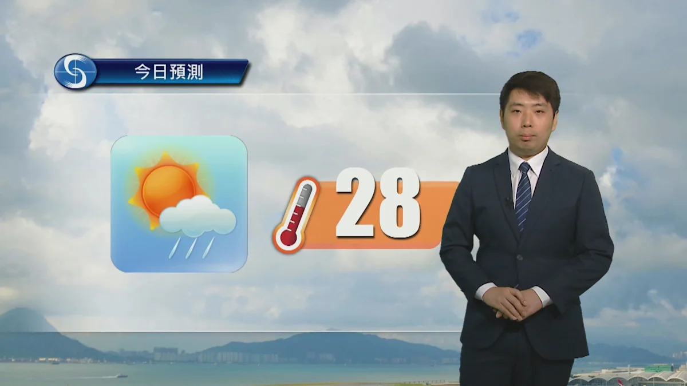
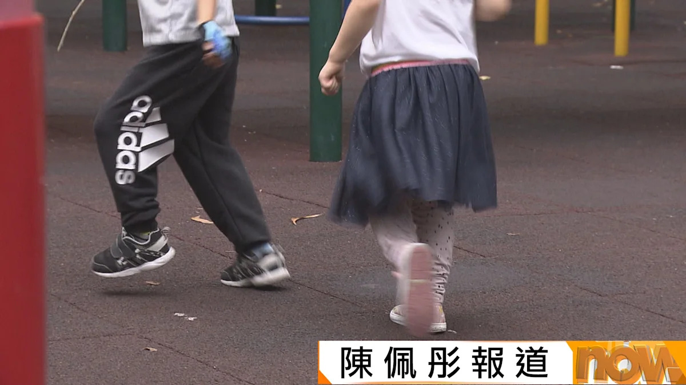
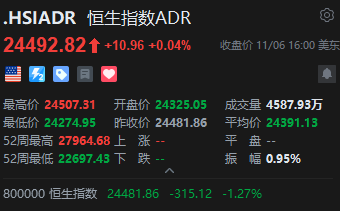

💡 投資博客
2 條💡
阿B講股
阿B講股
下一站 法國?
法國政府債務佔 GDP 比率達 121%，去年貿易逆差 692 億歐元，公共負債比率仍在上升，是歐盟負債最重國家中唯一負債比率超過 2020 年高峰的國家；三大評級公司給予法國的信貸評級比意大利更差。
 魔術師的伊謝爾倫日記
魔術師的伊謝爾倫日記
四季茗茶精選2026
英記一年一度八折大減價又來了，優惠由即日起做到 11 月 10 日。
東涌西站約 30 條支柱施工欠妥成全城焦點，港鐵須兩周內交報告；全球 AI 股災餘波未平，港股周五跌 315 點但全周仍升逾 5%；強烈東北季候風明日殺到，氣溫急降至 18 度以下。
屋宇署指東涌西站約 30 條混凝土柱欠妥，初步檢視無證據顯示故意偏離圖則，樓板臨時支撐未拆除，不構成結構危險；路政署要求港鐵兩周內提交詳細調查報告。
強烈東北季候風明日殺到，天文台預料高地吹烈風，市區周二及周三早上最低氣溫跌至 18 度以下，部分地區半日急降 10 度。

📰本港今日大致多雲，早晚有一兩陣雨，日間部分時間有陽光，最高氣溫約 28 度；明早轉吹偏北強風，天氣較涼，晚上氣溫進一步下降。
運輸及物流局局長陳美寶表示，香港現時連接全球約 220 個航點，目標 5 年內增至 240 個，聚焦南美、中亞、非洲及中東等高增長潛力市場。
引進辦公布第 7 批重點企業共 18 間公司來港，累計已引進 142 間企業，承諾投放 840 億元，製造近 2.7 萬個高端就業機會。
警方搗破投資「手工啤酒機」騙案，拘捕 3 人；騙徒聲稱年回報 60%、兩年後取回本金，6 名 55 至 81 歲長者合共損失逾 400 萬元。
政府聯合特遣隊搗破樓宇維修圍標集團並拘捕多人，屯門怡樂花園因承建商負責人被捕，急煞停原定周五晚的維修業主大會。
天水圍嘉湖山莊樂湖居一單位起火，疑香薰點燃雜物，67 歲女子雙手及呼吸道燒傷昏迷送院，約 100 名居民疏散。
尖沙咀凌晨有的士撞倒 22 歲過路男途人，事主拋飛 30 米頭部受傷昏迷送院，33 歲的士司機涉嫌危險駕駛被捕。

📰今個流感季節錄得 29 宗兒童感染流感嚴重個案、兩人死亡；兒科醫生關日華指今季兒童病情轉差快，提醒家長留意肚痛等病徵，提高警覺。
石澳舉行十年一度太平清醮，飄色巡遊吸引大批市民及旅客到訪；石澳太平清醮是現時港島唯一仍然舉行的太平清醮。
建築物管理條例修訂暫撤授權票持有上限建議，民政局局長麥美娟指實際操作有困難，會繼續研究，包括開發電子授權。
特區政府就美國、英國等十國有關黃之鋒案的聯合聲明作出嚴正反駁，指聲明罔顧事實、干預特區司法權，敦促有關國家停止干涉香港事務。
全球 AI 股災蔓延，日韓台股市瀉最多 6%，港股周五跌 315 點，跌幅跑贏區內股市；台灣限制沽空救市。
美國民主黨對 AI 發展立場引發熱錢恐慌，環球半導體及 AI 板塊遭遇拋售；恒指收報 24,481 點跌 315 點，北水逆市淨流入 24 億元，全周仍升 1,187 點。
恒指反彈至 24,404 點，正受制於 50 天及 100 天移動平均線密集阻力區，24,800 水平阻力不小，短線支持在 23,800 點。

📊周五美股三大指數漲跌不一，恒生指數 ADR 收報 24,492.82 點，較香港收市升約 11 點；匯豐 ADR 跌 0.73%，騰訊升 0.21%。
伯克希爾第三季營業利潤 127.1 億美元，按年下降 5.8%。
法國政府債務佔 GDP 比率達 121%，去年貿易逆差 692 億歐元，公共負債比率仍在上升，是歐盟負債最重國家中唯一負債比率超過 2020 年高峰的國家；三大評級公司給予法國的信貸評級比意大利更差。
魔術師的伊謝爾倫日記
英記一年一度八折大減價又來了，優惠由即日起做到 11 月 10 日。
iPhone Duo 開售首 3 天累計激活量約 12.46 萬台，國行 256GB 起售價 15,999 元，頂配 2TB 達 26,499 元；預售階段首批貨源迅速售罄。
iPhone Duo 推出僅兩週，App Store 已累積遠超 10 萬款專為摺疊 iPhone 而設的應用程式，每日仍有數千款優化版本上架。
小米宣傳帖顯示 11:17 AM，暗示小米 18 Pro 系列全球發布會定於 11 月 17 日，覆蓋 41 個市場。
三星或於 2027 年推出四款 Galaxy S27 系列，新增定位介乎 Plus 與 Ultra 之間的 S27 Pro；爆料指兩者五大差異中，Pro 版長焦鏡頭較弱。
Sony 推出全新 MDR-3R 貼耳式有線耳機，重現 80 年代經典設計。
WhatsApp 擬新增設定，讓用戶直接以原裝畫質傳送圖片及影片，無需再改以檔案形式傳送。
Android「快速分享」新增實用功能，可將相片或影片備份至 Windows 電腦。
Instagram 剪片程式 Edits 加推 macOS 版，免費使用但只限 M 系 Mac。
vivo 中階手機 V80 Lite 售價 $3,998，配備 10,000mAh 大電池及 44W 快充，續航測試錄得超過 31 小時。
電訊商再劈價，一部配備可變光圈及微距長焦鏡頭的華為旗艦，16GB RAM 加 512GB 儲存五千幾蚊入手，仲送 FreeClip 夾耳式耳機。
iOS 27.2 起，Apple Photos 的 Clean Up、Extend 等 AI 編輯工具會為影像加入 SynthID 隱形水印，標記 AI 生成或編輯內容。
Google 向 Antigravity 推送 2.29 更新，對話頁改版、加入由 Gemini Live 支援的語音模式，以及可在雲端獨立運作的遙距代理 Remote Control。
Plex 漏洞鏈 Plex2Shell 正遭廣泛攻擊，QNAP NAS 用戶宜盡快檢查及更新。
Razer 發表有線 USB-C 電競耳機 Hammerhead V3 Chroma，支援主動降噪。
爆料指 Apple 計劃由 2027 年下半年新 iPhone 起取消獨立 Action 按鈕，相關功能併入 Camera Control：單按開相機，長按執行原有動作。
據彭博報道，OpenAI 新一輪融資估值升至 1.25 萬億美元，另籌 110 億美元；Anthropic 亦已申請上市。
OpenAI 財務總監透露公司正進行融資談判，估值較今年 3 月一輪融資接近上漲 50%。
民主黨中期選舉大勝加劇市場對 AI 基建放緩的憂慮，部分 Anthropic 投資者預計其上市估值低於 1.5 萬億美元，甚至下探至 1 萬億美元；公司早前秘密遞交文件時目標估值為 2 萬億美元，預計下周啟動路演。
網傳 OpenAI 出現大規模封號，不少用戶未收到通知即無法登入；被封帳號集中在倒賣 API 額度、多人共享帳號、使用反代服務等類型，OpenAI 尚未公開回應。
馬斯克宣布特斯拉將於 2027 年年中前逐步停產 Cybertruck，為德州超級工廠生產 Cybercab 自動駕駛的士釋放產能；Cybertruck 遠未達到年銷 25 萬輛目標，2025 年美國銷量跌 48% 至 20,237 輛。
SpaceX 披露長期董事、谷歌企業發展總裁唐納德·哈里森已於 11 月 4 日辭職；哈里森是評估 SpaceX 與特斯拉合併可能性的獨立董事團成員之一，馬斯克正推動兩家公司合併。
Alphabet 披露截至第三季末持有約 297.7 萬股高通股票，市值約 5.48 億美元；高通正擺脫對手機芯片業務的依賴，瞄準 AI 推理市場並推出 Dragonwing 數據中心產品組合。
蘋果研究團隊披露人形機械人自主控制系統 HALO，在宇樹 G1 機械人上驗證，單任務成功率 91%；系統採用三層架構，上層以千問大模型編排任務，可本地運行無需聯網。
Meta 首席戰略官戴夫·韋納確認離職，出任 AI 推理初創 Fireworks 財務總監；韋納 2012 年加入 Facebook，曾任財務總監，2022 年轉任首席戰略官。
比爾·蓋茨表示參考加州億萬富翁稅機制向頂級富豪徵稅，是適配 AI 時代財富分配的合適方案；他認為不能指望富豪自發慈善解決貧富差距，並提議對 AI 模型消耗的詞元及工業機械人單獨徵稅。
RTX 50 系列顯卡連漲 11 個交易日後急跌，RTX 5080 回調兩成；均價仍為建議零售價 1.7 倍，華強北顯卡半天一個價。
OpenAI 公布專門用於網絡安全研究的 GPT-6 Cyber 模型，聲稱研究團隊用模型找出 Firefox 81 個過往未知的高危漏洞，亦為多項 Linux 核心漏洞開發出可運作的利用程式。
Google 斥資 170 億美元，在懷俄明州興建當地首個 AI 數據中心。
微軟收緊對 AI 雲供應商的監管，Nscale、Nebius、IREN 股價應聲挫逾 13%。
索尼推出靠 Wi-Fi 信號感知人體活動的跌倒偵測系統，無需穿戴設備亦不採集影像，適用於家居及安老院舍，協助看護人員及時發現跌倒情況。